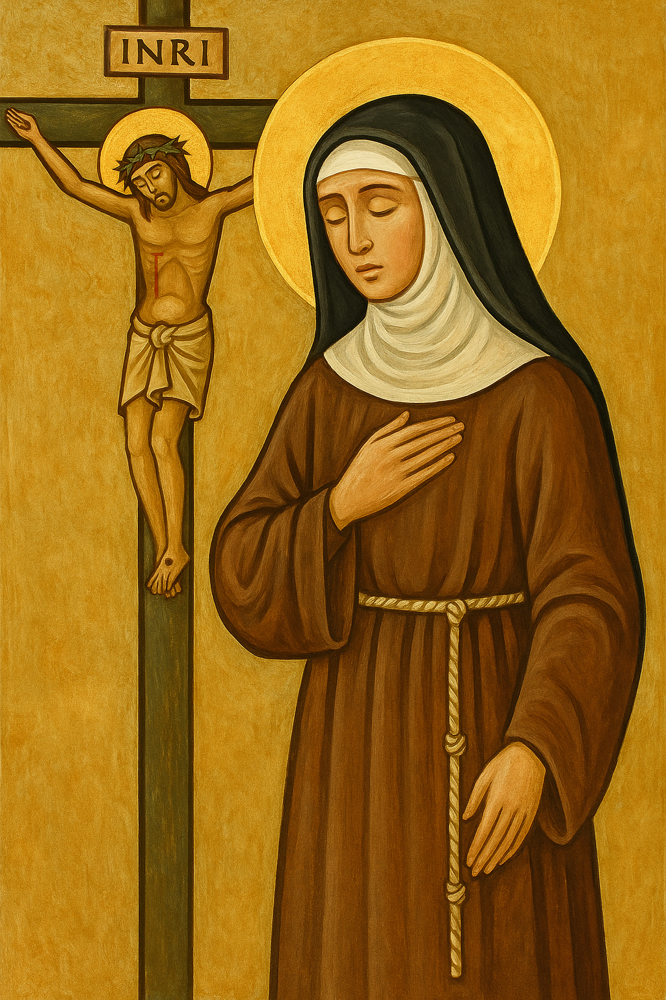
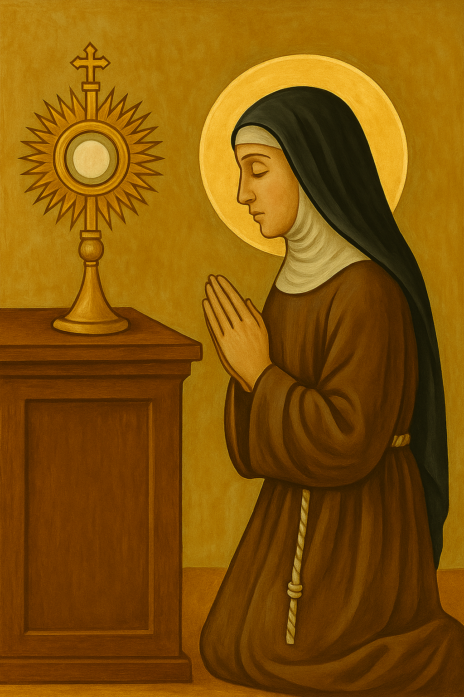
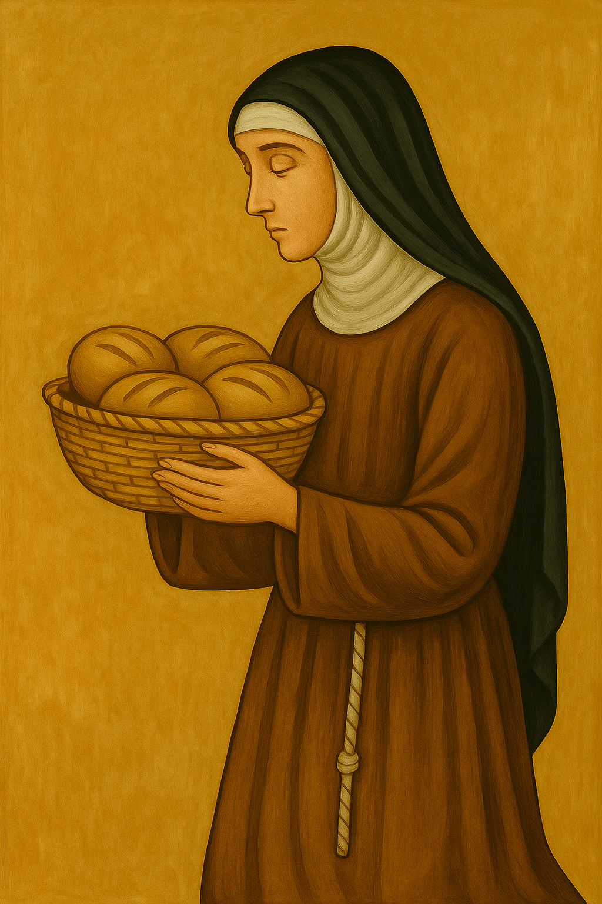
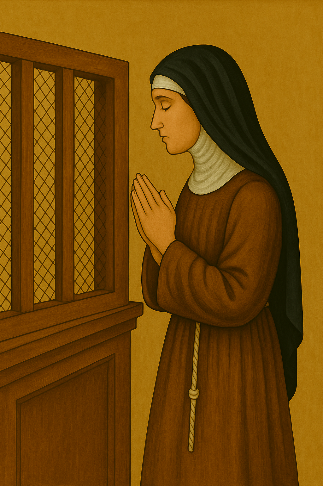
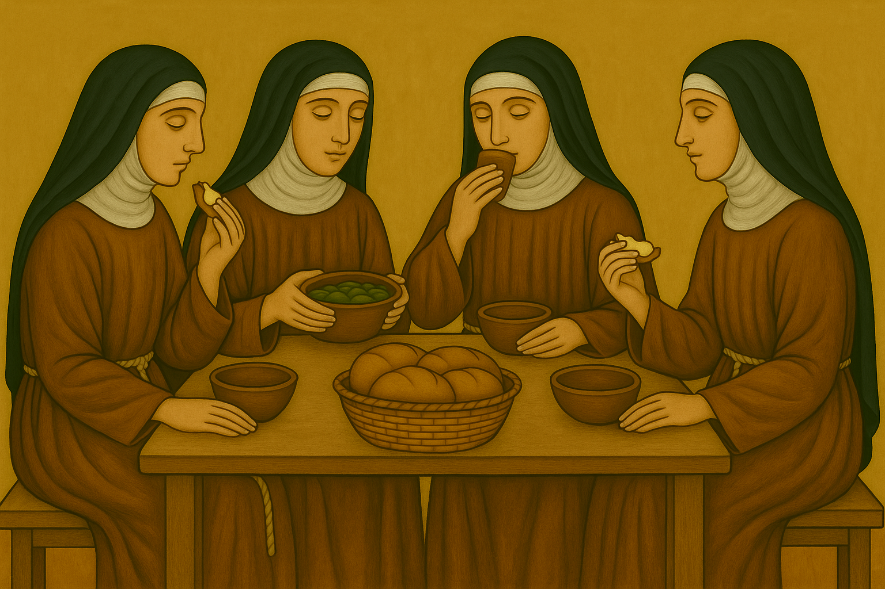
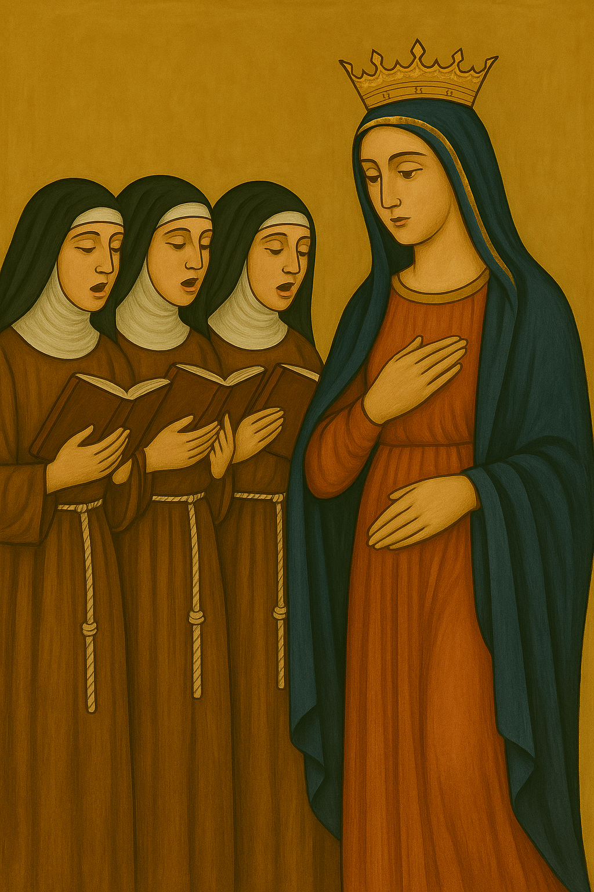
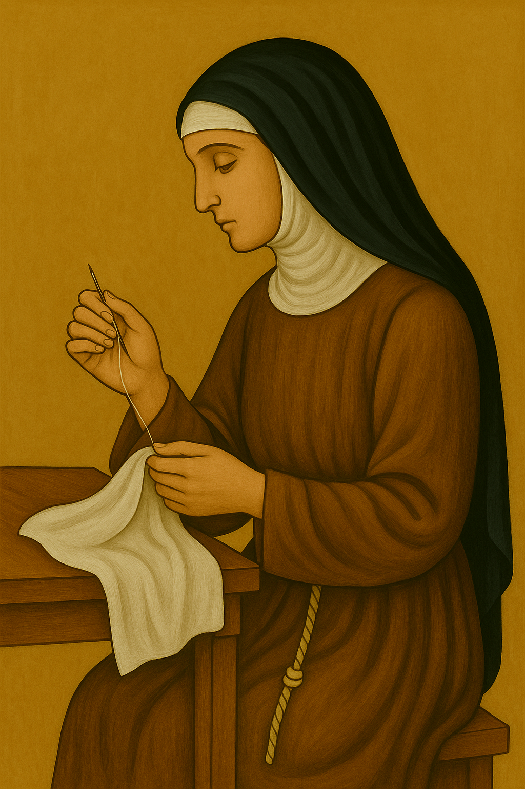
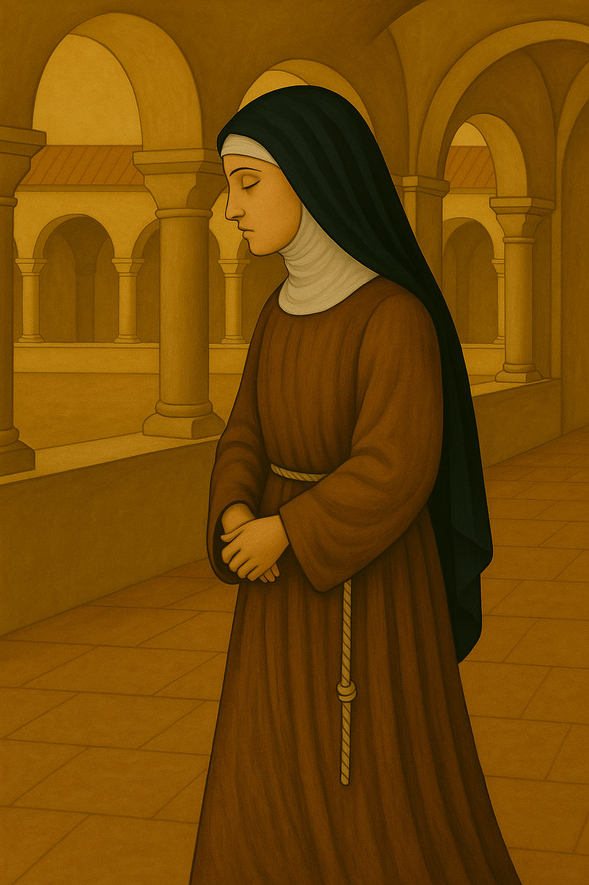
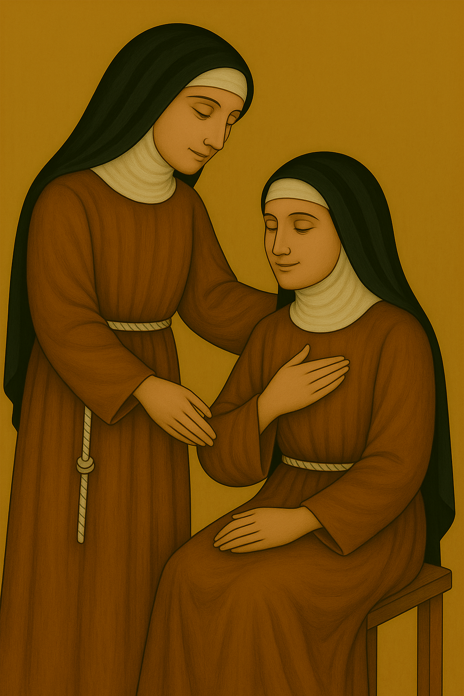

Seguimiento de Cristo Pobre y Crucificado

El centro de la vida clarisa es Jesucristo, especialmente en su pobreza, humildad y entrega total al Padre. Las Clarisas buscan configurarse con Él, viviendo como Él vivió: sin posesiones, en obediencia amorosa, fraternidad y adoración continua. La Regla de Santa Clara expresa y protege esta vocación, pero no la sustituye: su finalidad es conducirlas a una unión más íntima con Cristo vivo y resucitado.
Vida Contemplativa

Las Clarisas están llamadas a una vida contemplativa, que significa centrarse en la oración, la adoración y la comunión constante con Dios. Su vocación no consiste en la actividad externa, sino en ofrecer su vida como alabanza y súplica continua por la Iglesia y por el mundo. Su oración silenciosa sostiene espiritualmente a muchos, aunque ellas permanezcan ocultas.
Pobreza Radical

Inspiradas por el Evangelio y por el testimonio de San Francisco y Santa Clara, viven una pobreza real y concreta. No poseen bienes ni rentas fijas, y su sustento depende de la caridad y del trabajo de sus manos. Esta pobreza es una forma de libertad espiritual, que las despoja de todo para depender solo de Dios. Es también una forma de solidaridad con los pobres del mundo.
Clausura Papal

Viven bajo clausura papal, lo cual implica una separación física del mundo exterior para dedicarse exclusivamente a Dios. Esta clausura no es aislamiento, sino una consagración más intensa, que las convierte en signo profético del Reino de los Cielos. A través de su retiro, hacen presente lo invisible y eterno en medio del mundo.
Vida Fraterna en Comunidad

Viven juntas como hermanas, compartiendo la vida diaria en un ambiente de caridad, humildad, servicio y perdón. La comunidad no es un simple entorno práctico, sino un verdadero espacio teológico: allí aprenden a amar como Cristo, a sobrellevarse mutuamente y a caminar juntas hacia la santidad. La fraternidad es parte esencial de su testimonio.
Liturgia y Oración

La oración litúrgica estructura el día de las Clarisas. Rezan la Liturgia de las Horas (Laudes, Oficio de Lectura, Hora intermedia, Vísperas y Completas) en comunidad, participan diariamente en la Eucaristía y dedican largos espacios a la oración personal y a la adoración del Santísimo Sacramento. Su vida entera se convierte en una ofrenda orante.
Trabajo Manual

El trabajo es parte de su vida de oración y pobreza. Realizan tareas manuales como bordado, elaboración de dulces, hostias, o iconos, según el monasterio. Este trabajo no busca riqueza, sino contribuir a su sustento y ofrecer a Dios un acto de amor y sencillez. Lo realizan en silencio, con recogimiento, como prolongación de su vida espiritual.
Vida de Silencio y Retiro

El silencio favorece el recogimiento interior y la escucha de Dios. Las Clarisas cultivan un ambiente de silencio exterior para alimentar la oración y la contemplación. También hacen retiros espirituales periódicos y dedican tiempos a la soledad para profundizar su relación con el Señor. Este silencio es fértil: abre espacio a la gracia.
Obediencia y Humildad

Las hermanas profesan el voto de obediencia, comprometiéndose a buscar y cumplir la voluntad de Dios a través del discernimiento comunitario y la guía de la Madre Abadesa. Esta obediencia está profundamente unida a la humildad, virtud central en su camino espiritual. Renuncian a imponer su voluntad para crecer en libertad interior y en caridad fraterna.
Testimonio de Amor y Esperanza

Aunque escondidas del mundo, su vida tiene una dimensión profundamente misionera. Son testigos del amor incondicional de Dios, del valor de lo eterno, y del poder transformador de la oración. Su existencia silenciosa y entregada es una semilla de esperanza para la humanidad, un testimonio de que Cristo vive y sigue llamando corazones a amarlo sin reservas.